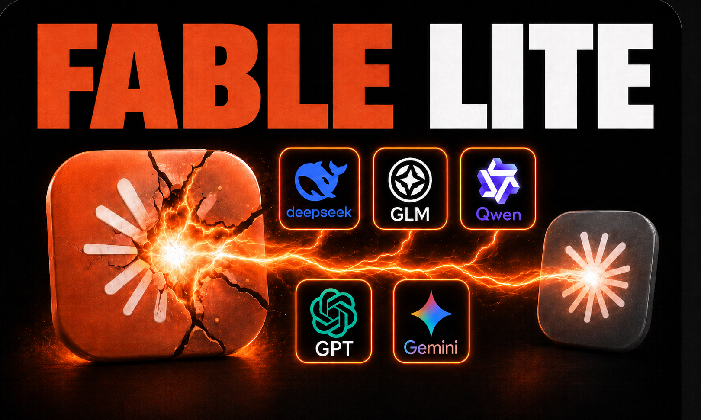
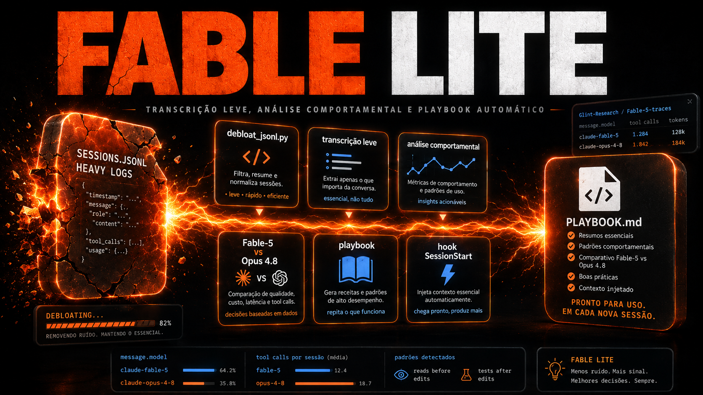

CURSO INEMA.CLUB · v2Fable Lite — Garimpando o Raciocínio dos Modelos
Como destilar seus logs do Claude Code, medir como cada modelo trabalha, e transformar o delta num playbook que faz o Opus agir mais como o Fable 5.
A técnica, em uma frase
Os logs do Claude Code vivem em ~/.claude/projects/*.jsonl.
Cada linha é um evento; o campo message.model diz
qual modelo escreveu cada turno. Isso é o suficiente para separar o trabalho do Fable 5 do trabalho do Opus 4.8 —
e medir o ritmo de cada um em números reais.
O pipeline é honesto e curto: (1) destila a gordura (tool_results, dumps de arquivo, anexos), (2) extrai o corpus de um modelo, (3) mede o comportamento, (4) compara Fable vs Opus, (5) vira playbook e injeta via hook / skill / CLAUDE.md.
Como funciona — o pipeline inteiro
Do log bruto ao playbook injetado: cada caixa é um script Python de stdlib pura em scripts/.

Os números reais (medidos neste projeto)
Fable-5 pensou antes de agir em 99% dos turnos lógicos.
Opus-4.8 pensou antes de agir em 54% — um delta de +45 pontos.
O debloat encolhe uma sessão típica em cerca de 74%.
Ferramentas por turno: Fable-5 usou 6,57 ferramentas/turno; Opus-4.8 usou 7,86 — ou seja, o Fable foi mais econômico. O sinal forte e transferível é o pensar-antes-de-agir; os demais são boa prática, não delta firme.
⚠️ O achado honesto (o diferencial deste curso)
O texto do raciocínio NÃO fica nos logs — vem cifrado (só a signature).
Você não minera o pensamento literal do modelo.
O que você minera é a presença do raciocínio, o texto visível e a sequência de ferramentas — isto é, o ritmo de trabalho. E isso já é poderoso o bastante para virar playbook.
As três trilhas
🪙 Os Logs São Ouro
Onde vivem as conversas, a anatomia de uma sessão JSONL, e o que é gordura vs ouro.
TRILHA 2🛠️ A Mão na Massa
Debloat na prática, extração do corpus, números reais e o delta Fable vs Opus.
TRILHA 3📓 Do Delta ao Playbook
Escrever o playbook e injetá-lo no modelo — inclusive sem dados próprios.
Baixe e use agora
📥 O Playbook (.md)
O arquivo-síntese gerado dos números reais (Fable 5 99% vs Opus 4.8 54% de pensar-antes). Aponte-o para o seu modelo via hook, skill ou CLAUDE.md.
🧩 A skill fable-mindset (.zip)
A skill do Claude Code com os 5 scripts embutidos. Descompacte em ~/.claude/skills/ e ela dispara sozinha (debloat, comparar modelos, gerar playbook).
Os scripts e o dataset aberto
📂 scripts/ neste projeto
Cinco scripts Python de stdlib pura que fazem o pipeline inteiro: debloat_jsonl.py, extract_corpus.py, compare_models.py, make_playbook.py e import_hf_traces.py.
🤗 Dataset aberto (Hugging Face)
Sem dados próprios? Use os traços abertos do Fable para rodar o pipeline desde já.
Glint-Research/Fable-5-traces →Aprenda a minerar o ritmo dos modelos
Este curso é parte da comunidade INEMA.CLUB — pesquisa, educação e experimentos com IA aplicada.